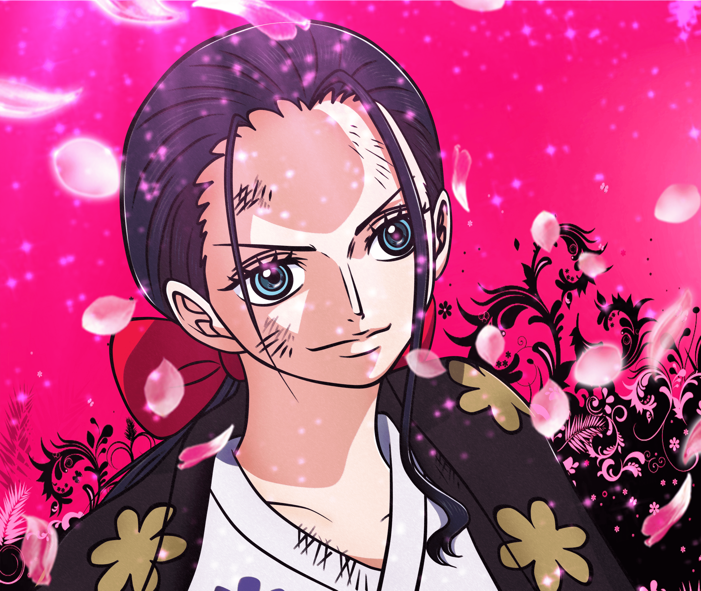

Aqui temos nosso querido e incrivel Capitão Monkey D. Luffy (Futuro Rei dos Piratas) e o restante de sua tripulação à seguir...
A melhor navegadora dos mares de One Piece! Nami.
Nosso vigia com olhos de águia e uma bela de uma pontaria, o atirador GOD USOPP... Mais conhecido por ser o lendário Sogeking!
O salvador dos dias de muita fome do nosso amigo Luffy (que são quase todos), Sanji
Zoro... O primeiro membro e braço direito de Luffy, nosso segundo Capitão do bando
Criador das mais diversas engenhocas SUUUPEER inovadoras, responsável por manter o navio em ótimas condições, o suuuuuuuuuuuuupeeeer carpinteiro FRANKY!
Com uma infância um tanto quanto difícil, mas que mesmo assim conseguiu se tornar uma mulher incrivelmente inteligente. A arqueóloga, historiadora e decifradora dos raros Poneglyphos. Robin.
O mais novo integrante do grupo, um excelente timoneiro e mestre de karate homem-peixe. Jinbe.
"YOHOHOHO! Posso ver sua calcinha?" -Brook O que seria de um bando pirata sem nosso notavel musico SOUL KING? Ele sempre está lá para elevar a moral com uma boa musica.
O glorioso guaxinim... digo... Rena! O amante de algodão doce! Um médico insubstituivel, sempre pronto para atender a todos. Chopper.